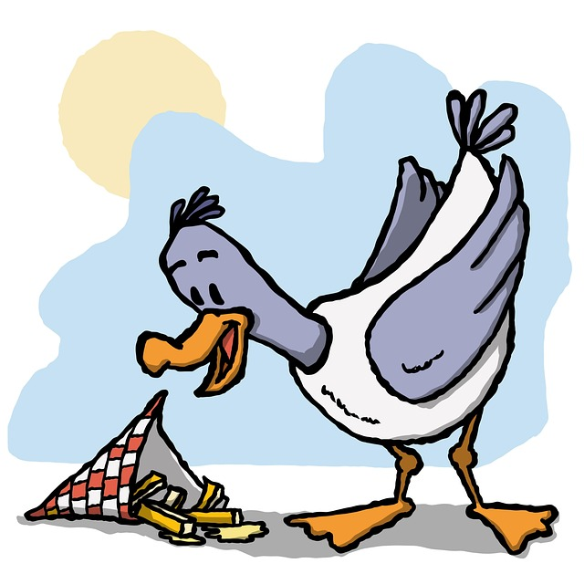

In a quiet pond surrounded by tall grass and singing frogs, lived a little duck named Daisy. She had soft yellow feathers, a tiny wobble when she walked, and the biggest dreams in the pond.
While the other ducklings were happy to splash and swim, Daisy would stare at the sky and whisper,
"I want to fly higher than the trees, maybe even touch the clouds!"
The other ducks laughed.
"You’re just a little duck," they said. "Ducks don't fly that high."
But Daisy didn’t stop dreaming.
Every morning, she flapped her wings a little harder. She’d climb the little hill near the pond and jump, practicing her takeoff. Day after day, she tried—and fell—and tried again.
One breezy morning, something felt different. The wind lifted her wings just right. Daisy leapt... and soared. Not high enough to reach the clouds yet—but higher than she ever had before.
The ducks below stopped and stared in amazement.
Daisy quacked with joy as she glided through the air, proving that dreams aren't too big—you just have to keep trying.